Ulemiste mobility study2026 · —EHR Building Registry Data Pipeline — TalTech2026 · — PDFPärnu Parking Analysis & Strategy2026 · City of PärnuKaupunkipolitiikan temaattisten kumppanuuksien arviointi2026 · —KASETTI - Kansallinen segregaation seuranta ja tietopohja2026 · KASETTIGENAISIS (africa) ~ HORIZON-CL4-2025-04-HUMAN-082026 · —Tallinn modal split study2025 · —MPK - Maailman parhaat kaupungit 20252025 · MPK
PDFPärnu Parking Analysis & Strategy2026 · City of PärnuKaupunkipolitiikan temaattisten kumppanuuksien arviointi2026 · —KASETTI - Kansallinen segregaation seuranta ja tietopohja2026 · KASETTIGENAISIS (africa) ~ HORIZON-CL4-2025-04-HUMAN-082026 · —Tallinn modal split study2025 · —MPK - Maailman parhaat kaupungit 20252025 · MPK PDFWinter Maintenance for Walking and Cycling — Harju County2025 · Association of Municipalities of Harju CountyContested borders2025 · —
PDFWinter Maintenance for Walking and Cycling — Harju County2025 · Association of Municipalities of Harju CountyContested borders2025 · — PDFLebanon Unsettled2024 · —
PDFLebanon Unsettled2024 · — PDFBlock 1 — Reimagining a Socialist-Era Superblock in Prishtina2023 · UNDP
PDFBlock 1 — Reimagining a Socialist-Era Superblock in Prishtina2023 · UNDP PDFStockmann Building — Rail Baltica Pedestrian Flow Analysis2022 · UnconfirmedUnfinished city prize2022 · —
PDFStockmann Building — Rail Baltica Pedestrian Flow Analysis2022 · UnconfirmedUnfinished city prize2022 · — PDFNational Study of Shrinking Patterns in Estonia2022 · Estonian Ministry of Economic Affairs and CommunicationsMEDIUM_The challenge of food production2022 · —
PDFNational Study of Shrinking Patterns in Estonia2022 · Estonian Ministry of Economic Affairs and CommunicationsMEDIUM_The challenge of food production2022 · — PDFRIPA2TAN — Environmental Drivers of Health in the Kilimanjaro Region2022 · Philipps-Universität MarburgLand use analysis Tallinn2022 · —Ida-Viru County Shrinking Cities Analysis2022 · Estonian Ministry of Finance
PDFRIPA2TAN — Environmental Drivers of Health in the Kilimanjaro Region2022 · Philipps-Universität MarburgLand use analysis Tallinn2022 · —Ida-Viru County Shrinking Cities Analysis2022 · Estonian Ministry of Finance PDFThe New Modal — Mobility Equity in Harju County2021 · Harju County Association of Local Governments
PDFThe New Modal — Mobility Equity in Harju County2021 · Harju County Association of Local Governments PDFKiida Peatust / Laida Peatust — Crowdsourced Bus Stop Survey2021 · Baltic Environmental Forum Estonia
PDFKiida Peatust / Laida Peatust — Crowdsourced Bus Stop Survey2021 · Baltic Environmental Forum Estonia PDFFyma × SPIN Unit — Mobility KPIs for Queen Elizabeth Olympic Park2021 · FymaEstonian Museum of Architecture - Unfinished city2021 · Estonian Museum of ArchitectureAkkadian_female entrepaneurshop2021 · —
PDFFyma × SPIN Unit — Mobility KPIs for Queen Elizabeth Olympic Park2021 · FymaEstonian Museum of Architecture - Unfinished city2021 · Estonian Museum of ArchitectureAkkadian_female entrepaneurshop2021 · — PDFCircular Park — Yerevan2020 · UNDP
PDFCircular Park — Yerevan2020 · UNDP PDFmetaYLE — Ülemiste Mobility Nudge2020 · City of Tallinn
PDFmetaYLE — Ülemiste Mobility Nudge2020 · City of Tallinn PDFA Research Pilot for Shrinking Cities2020 · Estonian Ministry of Finance
PDFA Research Pilot for Shrinking Cities2020 · Estonian Ministry of Finance Riga Mobility Metrics2020 · Demos Helsinki
Riga Mobility Metrics2020 · Demos Helsinki PDFPorvoo Square Benchmark2020 · ALA ArchitectsWild Mazzini - FinEst2019 · Wild MazziniWarsaw Spatial Development Scenarios2019 · City of WarsawUNDP - Istanbul Data clinic2019 · UNDPUNDP - Chisinau2019 · UNDP
PDFPorvoo Square Benchmark2020 · ALA ArchitectsWild Mazzini - FinEst2019 · Wild MazziniWarsaw Spatial Development Scenarios2019 · City of WarsawUNDP - Istanbul Data clinic2019 · UNDPUNDP - Chisinau2019 · UNDP PDFmetaPARK — Tallinn Parking Technical Normative2019 · City of Tallinn
PDFmetaPARK — Tallinn Parking Technical Normative2019 · City of Tallinn PDFmetaPARK — Tallinn Citywide Parking Count Map2019 · City of Tallinn
PDFmetaPARK — Tallinn Citywide Parking Count Map2019 · City of Tallinn PDFmetaLINN — Tallinn City Centre2019 · City of TallinnSPIN_Lopetamata linn unfinished city2019 · —
PDFmetaLINN — Tallinn City Centre2019 · City of TallinnSPIN_Lopetamata linn unfinished city2019 · — Heritage of Sipoo — Typomorphology Map2019 · Municipality of SipooOlomuc University - Geospatial Summerschool2019 · Olomuc UniversityLivady - Lapinlahti 3602019 · Livady
Heritage of Sipoo — Typomorphology Map2019 · Municipality of SipooOlomuc University - Geospatial Summerschool2019 · Olomuc UniversityLivady - Lapinlahti 3602019 · Livady PDFVision for Land Use Monitoring — Finnish Ministry of the Environment2019 · Ministry of the Environment
PDFVision for Land Use Monitoring — Finnish Ministry of the Environment2019 · Ministry of the Environment PDFCity Unfinished / The City Uncomputed2019 · Estonian Academy of Arts
PDFCity Unfinished / The City Uncomputed2019 · Estonian Academy of Arts PDFmetaLINN+8 — Unfinished City2019 · Estonian Academy of ArtsE&Y - Future Cities mentorship2019 · E&Y
PDFmetaLINN+8 — Unfinished City2019 · Estonian Academy of ArtsE&Y - Future Cities mentorship2019 · E&Y PDFNew Futurama2019 · Demos Helsinki and MaaS GlobalTwitter2018 · —
PDFNew Futurama2019 · Demos Helsinki and MaaS GlobalTwitter2018 · — PDFTurku Open Platform (TOP)2018 · City of TurkuStreet fronts2018 · —SSL Prostor - Metamorphology Lab Moscow Yakaterininburg2018 · SSL ProstorResearch_Helsinki night life2018 · —Report_GTA Toronto activities2018 · —Maps_Dogs of Helsinki2018 · —Map_Twitter2018 · —EU cities activities enthropy scaling2018 · —UNDP - Visualising cities2017 · UNDP
PDFTurku Open Platform (TOP)2018 · City of TurkuStreet fronts2018 · —SSL Prostor - Metamorphology Lab Moscow Yakaterininburg2018 · SSL ProstorResearch_Helsinki night life2018 · —Report_GTA Toronto activities2018 · —Maps_Dogs of Helsinki2018 · —Map_Twitter2018 · —EU cities activities enthropy scaling2018 · —UNDP - Visualising cities2017 · UNDP PDFThe Hidden Life of 32 Russian Monotowns2017 · Strelka KB
PDFThe Hidden Life of 32 Russian Monotowns2017 · Strelka KB The Hidden Life of 38 Cities — World Cup 2018 Heritage2017 · Strelka KB
The Hidden Life of 38 Cities — World Cup 2018 Heritage2017 · Strelka KB PDFMediaCityUK Activity Analysis2017 · University of SalfordOulu University - Metamorphology Lab Oulu2017 · Oulu University
PDFMediaCityUK Activity Analysis2017 · University of SalfordOulu University - Metamorphology Lab Oulu2017 · Oulu University PDFRio de Janeiro Olympic Urbanism Maps2016 · Princeton UniversityARS Project - Procedural design2016 · ARS ProjectUrban Design London - TechInnovation2015 · Urban Design London
PDFRio de Janeiro Olympic Urbanism Maps2016 · Princeton UniversityARS Project - Procedural design2016 · ARS ProjectUrban Design London - TechInnovation2015 · Urban Design London PDFA Sense of Place — Turku2015 · City of Turku
PDFA Sense of Place — Turku2015 · City of Turku Colosseum Night Lighting Map2015 · Sapienza University of Rome
Colosseum Night Lighting Map2015 · Sapienza University of Rome TAB-Lab — Tallinn Architecture Biennale 20152015 · Estonian Centre of Architecture
TAB-Lab — Tallinn Architecture Biennale 20152015 · Estonian Centre of Architecture Tallinn Cycling & Morning Paths (2014 update)2014 · None — independent research
Tallinn Cycling & Morning Paths (2014 update)2014 · None — independent research PDFCrime, Society and Urban Design (CPTED)2014 · Estonian Police and Border Guard Board
PDFCrime, Society and Urban Design (CPTED)2014 · Estonian Police and Border Guard Board PDFFrom Ballroom to Dead End — Tallinn Night Map2013 · None — academic conference researchEAEA11 poster - From ballroom to dead end2013 · EAEA11 poster
PDFFrom Ballroom to Dead End — Tallinn Night Map2013 · None — academic conference researchEAEA11 poster - From ballroom to dead end2013 · EAEA11 poster Bike Paths — Tallinn (2012)2012 · None — independent academic research
Bike Paths — Tallinn (2012)2012 · None — independent academic research
PDFPärnu Parking Analysis & Strategy2026 · City of PärnuKaupunkipolitiikan temaattisten kumppanuuksien arviointi2026 · —KASETTI - Kansallinen segregaation seuranta ja tietopohja2026 · KASETTIGENAISIS (africa) ~ HORIZON-CL4-2025-04-HUMAN-082026 · —Tallinn modal split study2025 · —MPK - Maailman parhaat kaupungit 20252025 · MPKPDFWinter Maintenance for Walking and Cycling — Harju County2025 · Association of Municipalities of Harju CountyContested borders2025 · —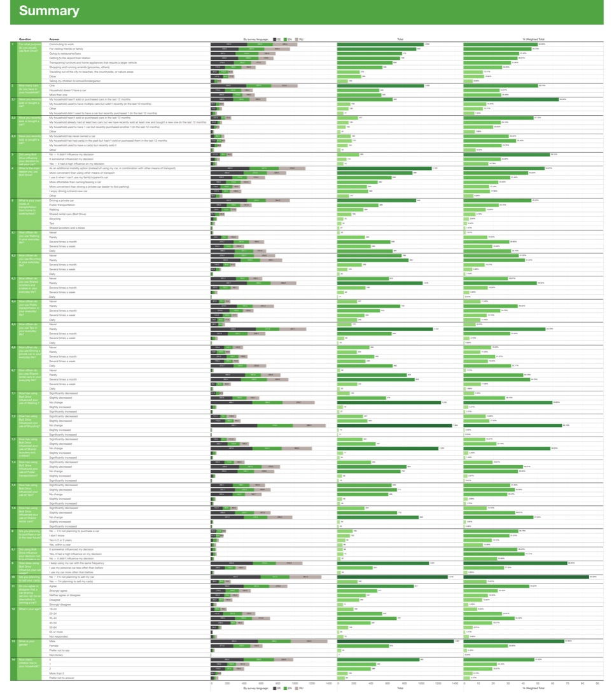
PDFBolt Drive — Car-Sharing Mode-Shift Survey2025 · BoltBATTS2025 · —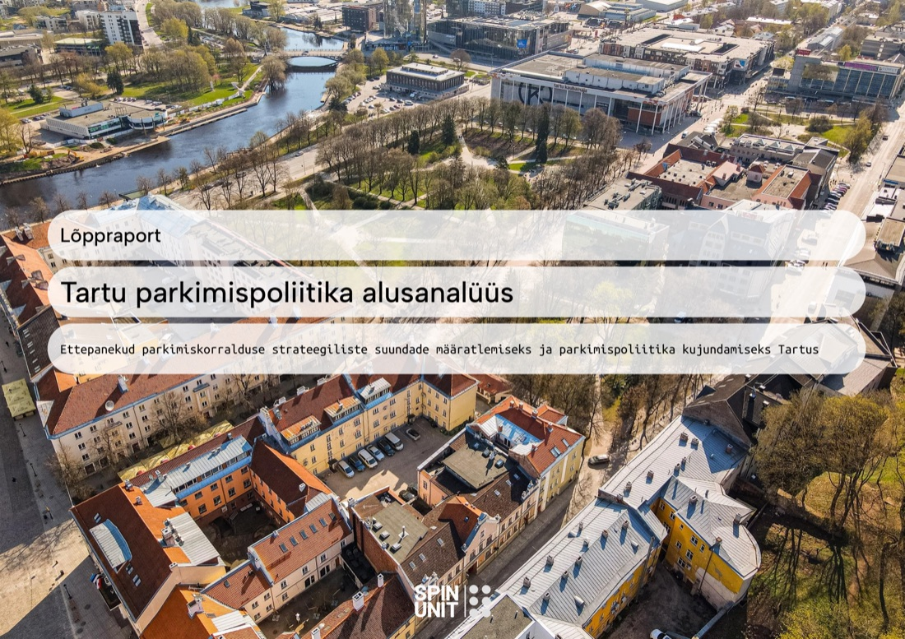
PDFTartu Parking Policy Baseline Analysis2024 · City of Tartu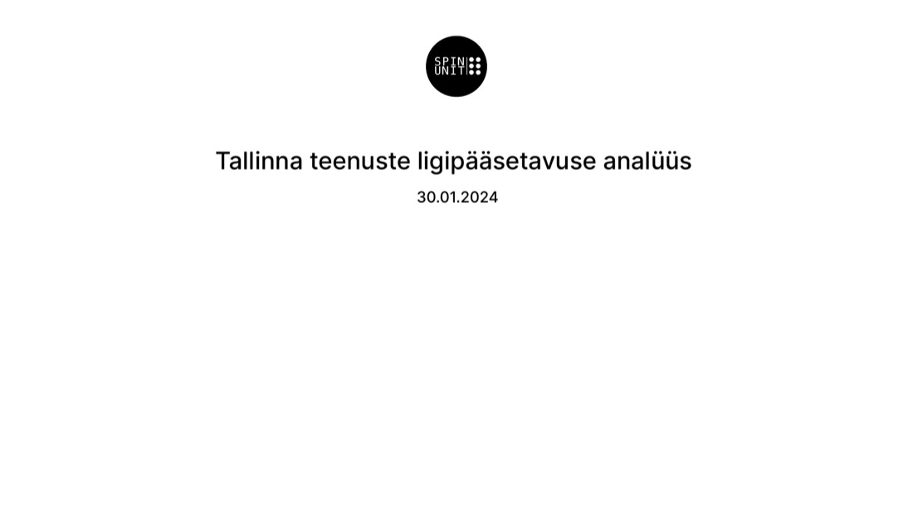
PDFTallinn Service Accessibility Analysis2024 · Tallinna StrateegiakeskusPDFLebanon Unsettled2024 · —PDFBlock 1 — Reimagining a Socialist-Era Superblock in Prishtina2023 · UNDP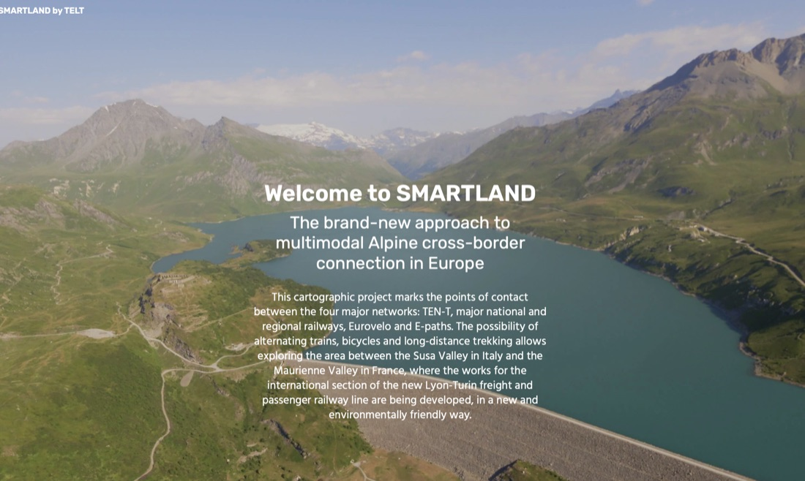
PDFSMARTLAND by TELT — Interactive Storymap2023 · TELTTallinn - metaPARK data redelivery2023 · TallinnBiloku 12023 · —Aalto University - GoodCamp challange2023 · Aalto UniversityPDFStockmann Building — Rail Baltica Pedestrian Flow Analysis2022 · UnconfirmedUnfinished city prize2022 · —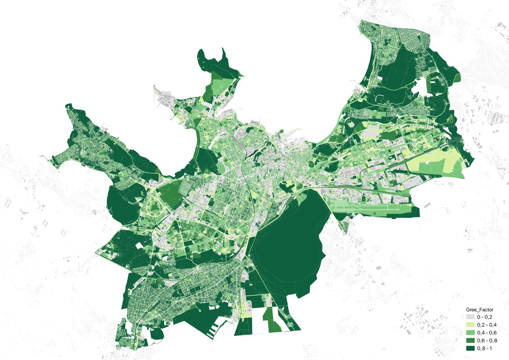
PDFTallinn Green Factor (Rohefaktor)2022 · City of TallinnPDFNational Study of Shrinking Patterns in Estonia2022 · Estonian Ministry of Economic Affairs and CommunicationsMEDIUM_The challenge of food production2022 · —PDFRIPA2TAN — Environmental Drivers of Health in the Kilimanjaro Region2022 · Philipps-Universität MarburgLand use analysis Tallinn2022 · —Ida-Viru County Shrinking Cities Analysis2022 · Estonian Ministry of Finance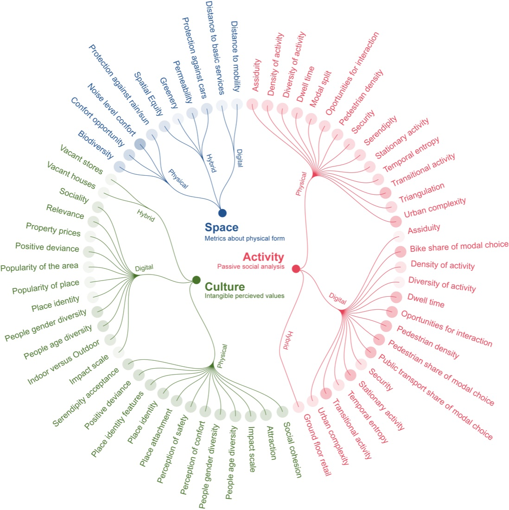
PDFExperimentation Evaluation Toolkit — Ylä-Malmi Pilot2022 · Forum Virium Helsinki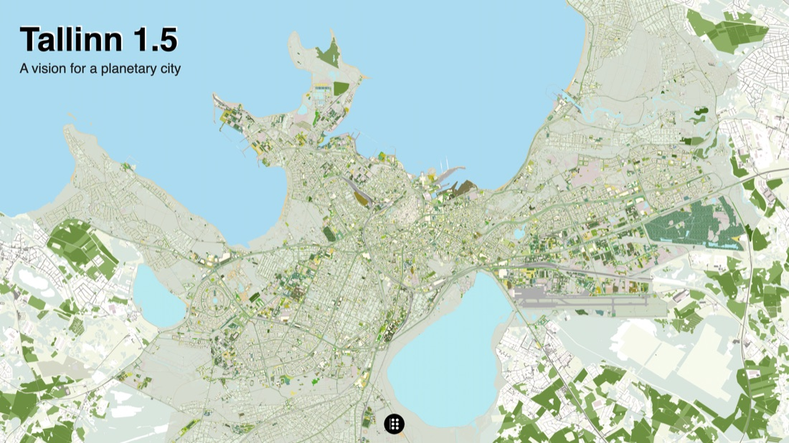
PDFTallinn 1.5 — A Plan for a Planetary City2022 · Estonian Centre of ArchitectureA Real Space2022 · —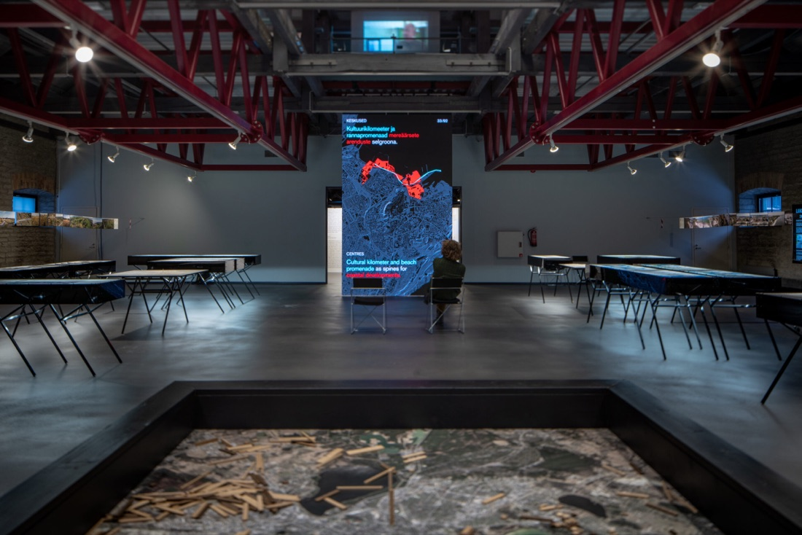
City Unfinished — Museum Exhibition2021 · —Tuusula - Harismaki2021 · TuusulaSPIN_Floorin2021 · —PDFThe New Modal — Mobility Equity in Harju County2021 · Harju County Association of Local GovernmentsPDFKiida Peatust / Laida Peatust — Crowdsourced Bus Stop Survey2021 · Baltic Environmental Forum EstoniaPDFFyma × SPIN Unit — Mobility KPIs for Queen Elizabeth Olympic Park2021 · FymaEstonian Museum of Architecture - Unfinished city2021 · Estonian Museum of ArchitectureAkkadian_female entrepaneurshop2021 · —PDFCircular Park — Yerevan2020 · UNDPPDFmetaYLE — Ülemiste Mobility Nudge2020 · City of Tallinn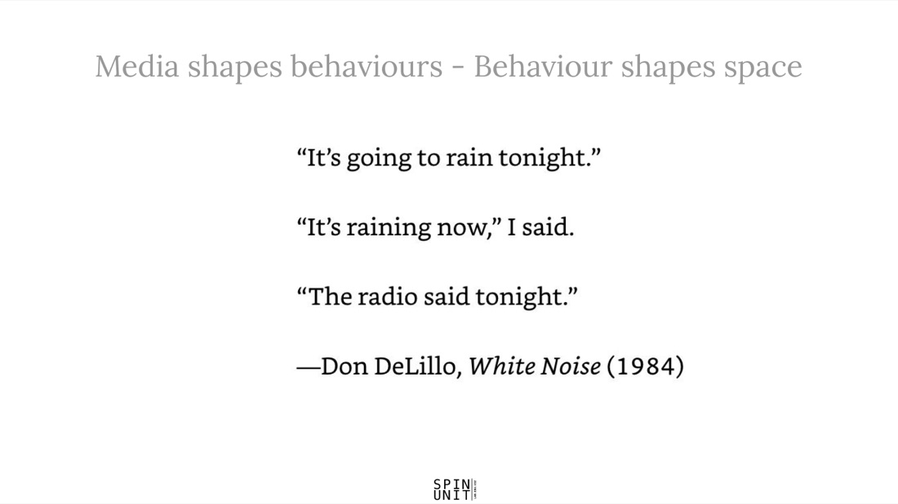
PDFEthical Use of Urban Data2020 · Strelka KB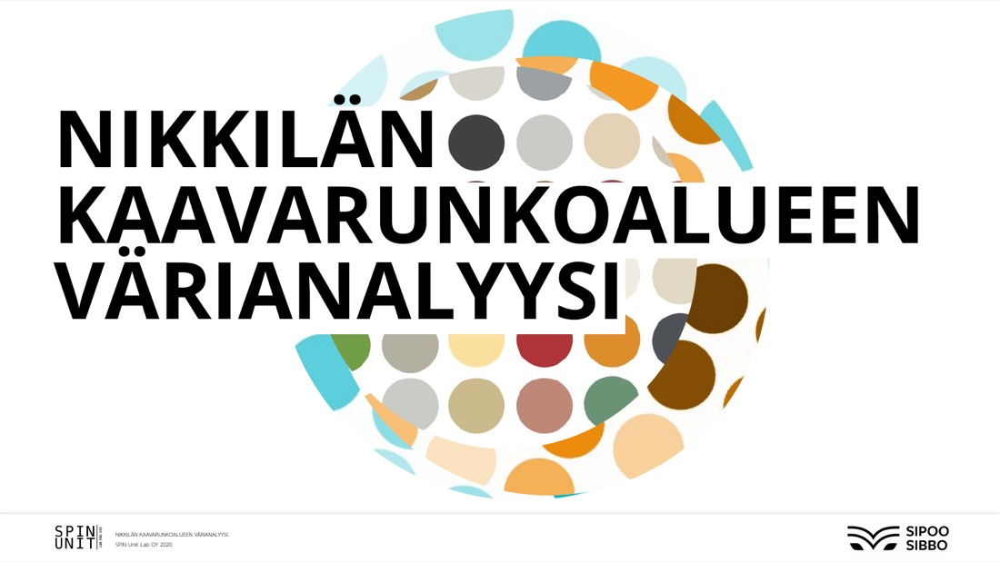
PDFNikkilä Colour Analysis2020 · Municipality of Sipoo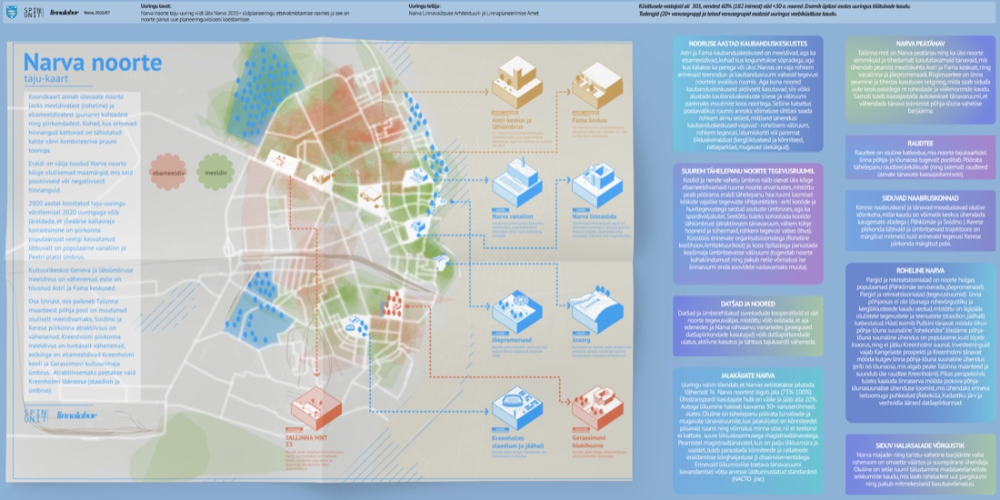
PDFReCenter Narva — Youth Vision for Narva 20352020 · City of NarvaPDFA Research Pilot for Shrinking Cities2020 · Estonian Ministry of Finance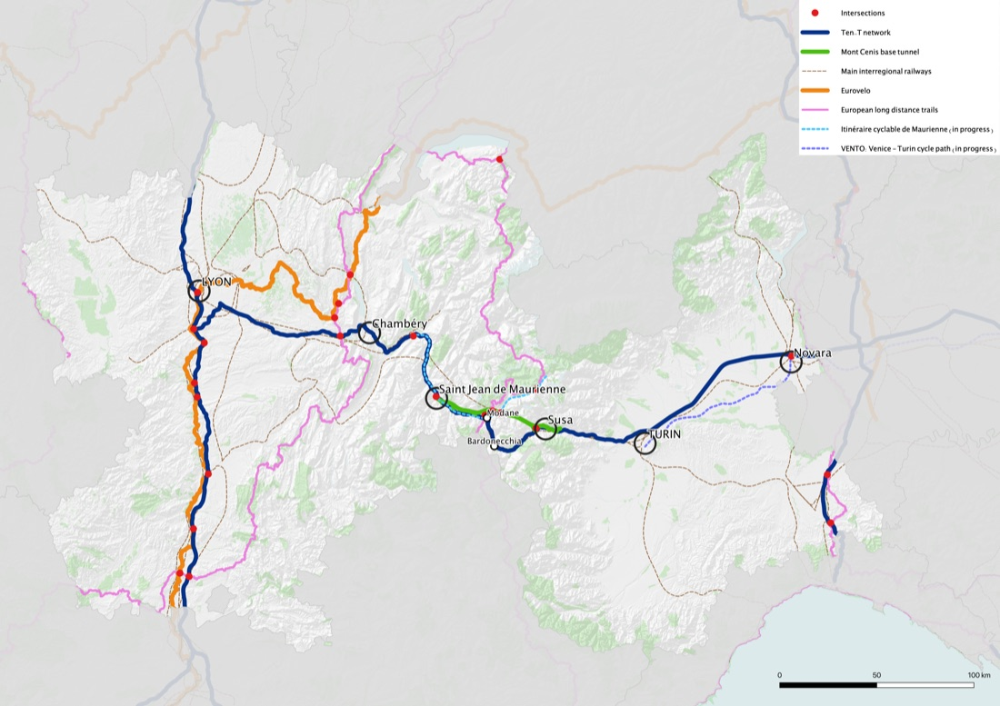
Lyon-Turin Multimodal Network Maps2020 · TELTRiga Mobility Metrics2020 · Demos HelsinkiPDFPorvoo Square Benchmark2020 · ALA ArchitectsWild Mazzini - FinEst2019 · Wild MazziniWarsaw Spatial Development Scenarios2019 · City of WarsawUNDP - Istanbul Data clinic2019 · UNDPUNDP - Chisinau2019 · UNDPPDFmetaPARK — Tallinn Parking Technical Normative2019 · City of TallinnPDFmetaPARK — Tallinn Citywide Parking Count Map2019 · City of Tallinn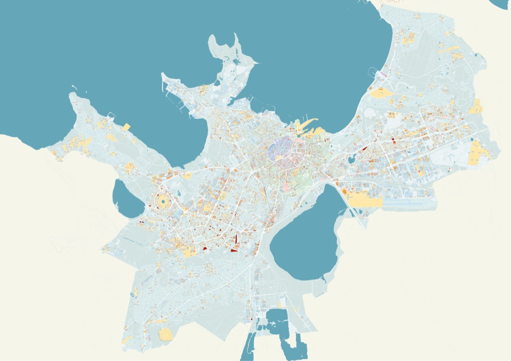
PDFmetaPARK — Performance-Based Parking Policy for Tallinn2019 · City of TallinnPDFmetaLINN — Tallinn City Centre2019 · City of TallinnSPIN_Lopetamata linn unfinished city2019 · —Heritage of Sipoo — Typomorphology Map2019 · Municipality of SipooOlomuc University - Geospatial Summerschool2019 · Olomuc UniversityLivady - Lapinlahti 3602019 · LivadyPDFVision for Land Use Monitoring — Finnish Ministry of the Environment2019 · Ministry of the EnvironmentPDFCity Unfinished / The City Uncomputed2019 · Estonian Academy of ArtsPDFmetaLINN+8 — Unfinished City2019 · Estonian Academy of ArtsE&Y - Future Cities mentorship2019 · E&YPDFNew Futurama2019 · Demos Helsinki and MaaS GlobalTwitter2018 · —PDFTurku Open Platform (TOP)2018 · City of TurkuStreet fronts2018 · —SSL Prostor - Metamorphology Lab Moscow Yakaterininburg2018 · SSL ProstorResearch_Helsinki night life2018 · —Report_GTA Toronto activities2018 · —Maps_Dogs of Helsinki2018 · —Map_Twitter2018 · —EU cities activities enthropy scaling2018 · —UNDP - Visualising cities2017 · UNDPPDFThe Hidden Life of 32 Russian Monotowns2017 · Strelka KBThe Hidden Life of 38 Cities — World Cup 2018 Heritage2017 · Strelka KBPDFMediaCityUK Activity Analysis2017 · University of SalfordOulu University - Metamorphology Lab Oulu2017 · Oulu University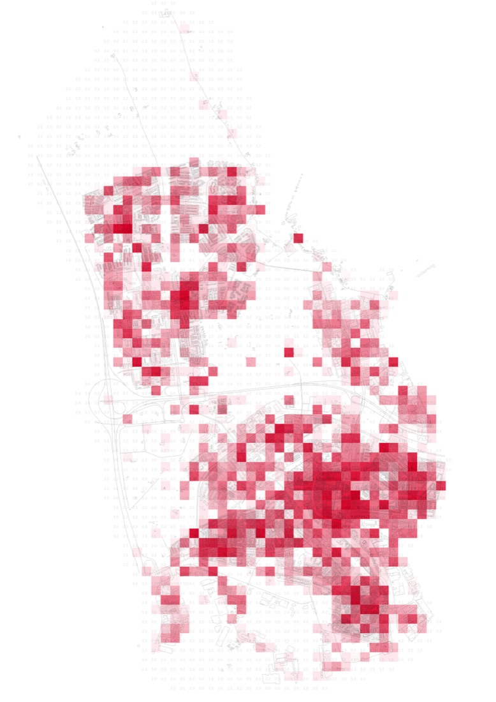
PDFVoorbij de Winkelstraat — Schiedam2017 · karres+brandsAlicante University - Metamorphology Lab2017 · Alicante UniversitySaratov (proposed engagement, not delivered)2016 · —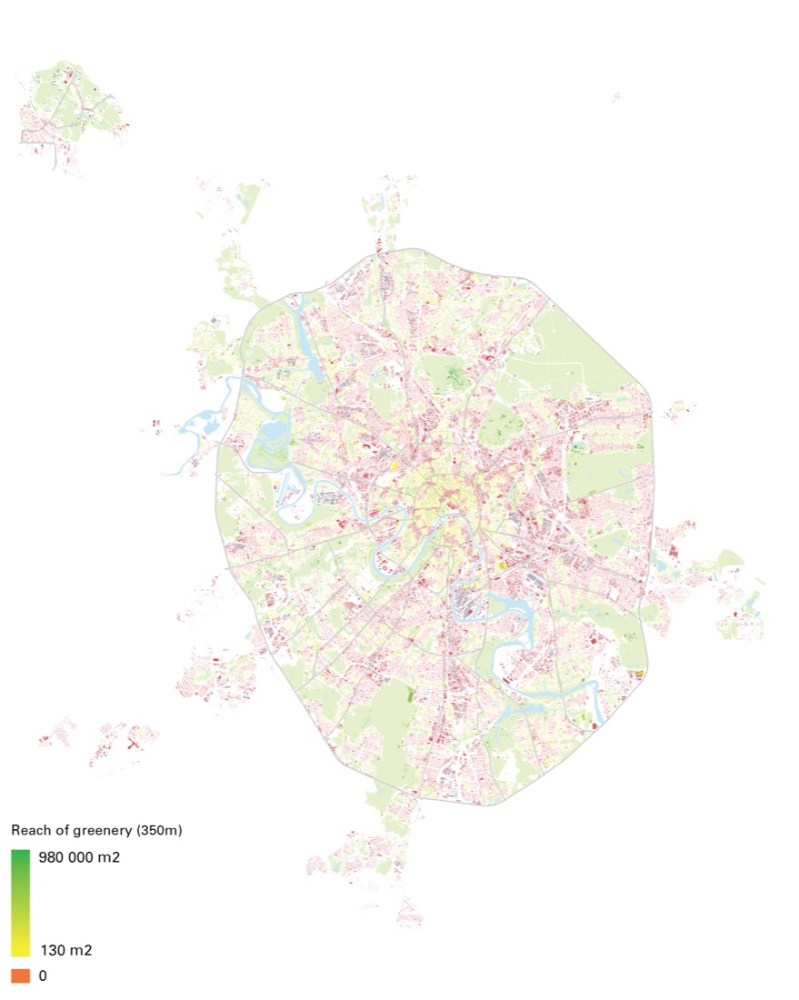
PDFMoscow Green & Water Accessibility Analysis2016 · Strelka KBPDFRio de Janeiro Olympic Urbanism Maps2016 · Princeton UniversityARS Project - Procedural design2016 · ARS ProjectUrban Design London - TechInnovation2015 · Urban Design LondonPDFA Sense of Place — Turku2015 · City of TurkuColosseum Night Lighting Map2015 · Sapienza University of RomeTAB-Lab — Tallinn Architecture Biennale 20152015 · Estonian Centre of ArchitectureTallinn Cycling & Morning Paths (2014 update)2014 · None — independent researchPDFCrime, Society and Urban Design (CPTED)2014 · Estonian Police and Border Guard Board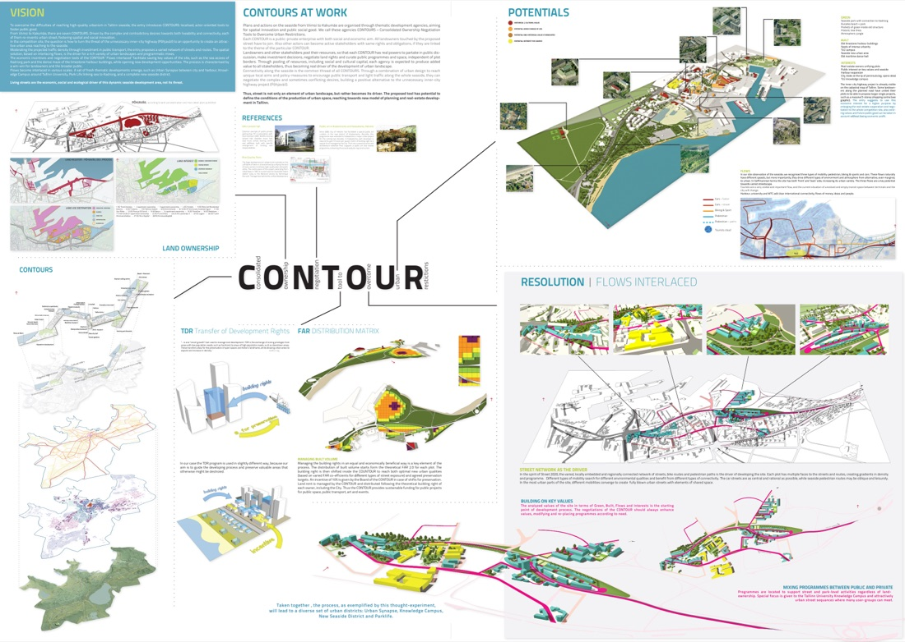
CONTOUR — Tallinn Seaside2014 · None — competition/research entryResearch_Urban Grammar, read n write2013 · —PDFFrom Ballroom to Dead End — Tallinn Night Map2013 · None — academic conference researchEAEA11 poster - From ballroom to dead end2013 · EAEA11 poster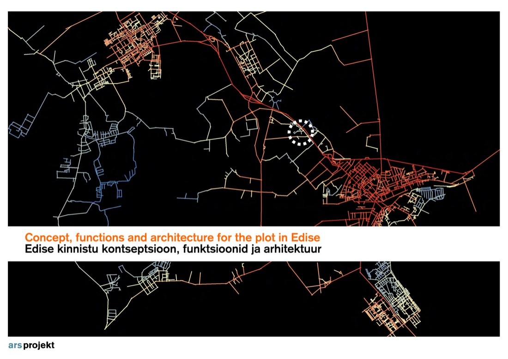
PDFEdise Concept Plan2013 · OÜ Revino AiandTallinn - Endomondo Biking in Tallinn2012 · TallinnMaps_Tallinn pedestrian centrality2012 · —Maps_Shortest distances - car roads2012 · Maps_Shortest distancesIndie - Tallinn pedestrian centrality2012 · IndieHenge2012 · —Bike Paths — Tallinn (2012)2012 · None — independent academic research